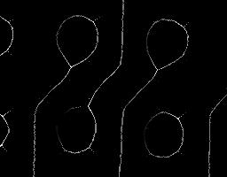

{kind=link}
{kind=link}
{kind=link}
| [mmopenth] [Up] [mmskelmrec] | |
| Copyright (c) 2003, Roberto A. Lotufo, UNICAMP-University of Campinas; Rubens C. Machado, CenPRA-Renato Archer Research Center. |
| [mmopenth] [Up] [mmskelmrec] | Residues |
Implemented in Python.
| f | Image Binary image. |
| B | Structuring Element Default:
|
| option | String Choose one of: binary: output a binary image (medial axis); value: output a grayscale image with values of the radius of the disk to reconstruct the original image (medial axis transform). Default:
|
| y | Image Gray-scale (uint8 or uint16) or binary image. |
mmskelm creates the image
y by computing the morphological skeleton by
B of the image
f, when
option is BINARY. In this case, the pixels of value 1 in
y are center of maximal balls (generated from
B) included in
f. This is also called Medial Axis. If
option is VALUE, the non zeros pixels in
y are the radius plus 1 of the maximal balls. This is called Medial Axis Transform or valued morphological skeleton.
>>> from Numeric import ones
>>> a=mmneg(mmframe(mmbinary(ones((7,9)))))
>>> print a
[[0 0 0 0 0 0 0 0 0] [0 1 1 1 1 1 1 1 0] [0 1 1 1 1 1 1 1 0] [0 1 1 1 1 1 1 1 0] [0 1 1 1 1 1 1 1 0] [0 1 1 1 1 1 1 1 0] [0 0 0 0 0 0 0 0 0]]
>>> print mmskelm(a)
[[0 0 0 0 0 0 0 0 0] [0 1 0 0 0 0 0 1 0] [0 0 1 0 0 0 1 0 0] [0 0 0 1 1 1 0 0 0] [0 0 1 0 0 0 1 0 0] [0 1 0 0 0 0 0 1 0] [0 0 0 0 0 0 0 0 0]]
>>> print mmskelm(a,mmsebox())
[[0 0 0 0 0 0 0 0 0] [0 0 0 0 0 0 0 0 0] [0 0 0 0 0 0 0 0 0] [0 0 0 1 1 1 0 0 0] [0 0 0 0 0 0 0 0 0] [0 0 0 0 0 0 0 0 0] [0 0 0 0 0 0 0 0 0]]
>>> c=mmskelm(a,mmsecross(),'value')
>>> mmshow(c)
|  | |
| c |
def mmskelm(f, B=None, option="binary"):
from string import upper
from Numeric import asarray
if B is None: B = mmsecross()
assert mmisbinary(f),'Input binary image only'
option = upper(option)
k1,k2 = mmlimits(f)
y = mmgray(mmintersec(f, k1),'uint16')
iszero = asarray(y)
nb = mmsesum(B,0)
for r in range(1,65535):
ero = mmero( f, nb)
if mmisequal(ero, iszero): break
f1 = mmopenth( ero, B)
nb = mmsedil(nb, B)
y = mmunion(y, mmgray(f1,'uint16',r))
if option == 'BINARY':
y = mmbinary(y)
return y
| mmfreedom | Control automatic data type conversion. |
| mmcbisector | N-Conditional bisector. |
| mmthin | Image transformation by thinning. |
| mmskelmrec | Morphological skeleton reconstruction (Inverse Medial Axis Transform). |
| [mmopenth] [Up] [mmskelmrec] | |
| Copyright (c) 2003, Roberto A. Lotufo, UNICAMP-University of Campinas; Rubens C. Machado, CenPRA-Renato Archer Research Center. |